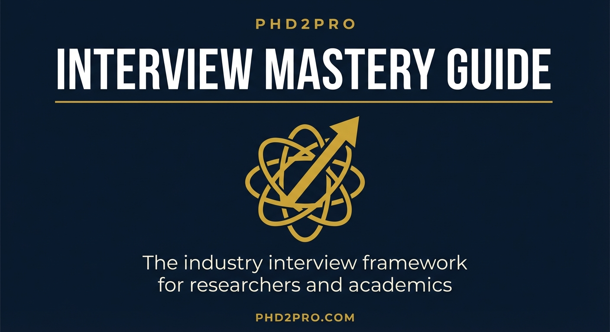

Built for researchers and academics making the move to industry. Your expertise is real. The problem is that interviewers cannot see it until you translate it.
This guide gives you the frameworks to do that translation — so you walk into every interview thinking like someone who already belongs in the room.
The candidates who get offers arrive knowing how the business makes money, where it is growing, and what problems the hiring manager needs solved. That level of preparation is rarer than it should be, and it shows immediately.
Interviewers who hire for business roles expect candidates to speak fluently about these numbers. Know their definitions and prepare one question about each metric as it applies to the company you are interviewing with.
When you can reference a company's specific metrics or recent strategic moves in your answers, you signal that you think about problems the way business leaders do, not the way job seekers do. This one shift separates candidates from peers who studied the same job description.
Cox Communications is one of the largest private broadband and media companies in the United States, serving roughly 6.5 million residential and business customers across 18 states. Unlike publicly traded telecoms, Cox does not publish quarterly earnings, but enough is known from industry reporting, FCC filings, and trade press to prepare a strong dossier. Here is what thorough research looks like in practice.
Cox earns revenue primarily through recurring subscriptions: residential broadband (its highest-margin product), video/TV bundles (declining), voice services, and Cox Business (SMB and enterprise connectivity). Broadband now accounts for the majority of revenue. The company has been aggressively investing in fiber-to-the-home (FTTH) infrastructure to defend against AT&T Fiber and new entrants like Ziply and T-Mobile Home Internet.
Cox competes primarily against AT&T (fiber), Lumen/CenturyLink (legacy DSL transitioning to fiber), wireless-based home internet from T-Mobile and Verizon, and in some markets, Google Fiber. Its key advantage is existing coaxial infrastructure and high brand recognition in its service footprint. Its key vulnerability is that fiber competitors can offer symmetrical gigabit speeds at comparable prices.
Cox has publicly committed to expanding its fiber footprint, growing Cox Business (enterprise and government contracts), and improving customer experience to reduce churn. The company has invested in mobile (Cox Mobile) as a bundling tool to lock in broadband customers.
Walk into a Cox Communications interview with specific, informed answers to these six categories. Vague answers in any of these areas mark you as a candidate who did not do the work.
Cox is primarily a broadband business now. Video revenue is declining as cord-cutting accelerates, so the strategic focus has shifted to protecting and growing broadband subscribers while building out fiber to compete with AT&T Fiber and fixed wireless alternatives from T-Mobile. Cox Business is the growth segment on the enterprise side. The company is also using Cox Mobile as a defensive bundle to reduce broadband churn rather than as a standalone revenue driver.
The fiber buildout is a multi-year infrastructure investment that creates real business problems to solve, not incremental work. I am interested in being part of a company making that kind of bet on its infrastructure while simultaneously defending a large installed base. The scale of the Cox Business segment and the complexity of selling connectivity to enterprise customers is the kind of environment where the skills I have developed in [prior field] translate directly.
Three main ones. First, fiber overbuild: AT&T Fiber has been taking share in markets where both companies operate, and the overlap is growing. Second, the video business continues to shrink as streaming replaces linear TV, which means Cox has to find ways to protect the broadband relationship even when the bundle value declines. Third, customer experience: the cable industry has historically had low NPS scores, and improving service quality is not just a brand issue, it is a churn reduction lever.
For a sales or account role: ARPU (average revenue per user), churn rate, net new subscriber adds, and bundle attachment rate. For an operations or product role: time-to-install, first-call resolution, customer satisfaction scores, and network reliability uptime. For a Cox Business role: contract value, enterprise penetration in the service footprint, and renewal rate on multi-year service agreements.
Frame your answer around the business outcome, not your background. Instead of: "I managed a research program at a university." Try: "I managed a program serving 200 stakeholders with a $2.4M annual budget and a fixed deliverable calendar. The discipline required to keep that on track in a complex environment maps directly to managing multi-site accounts or coordinating across service delivery teams."
The connectivity layer becomes more commoditized, which means the companies that win will differentiate on service reliability, bundling (broadband plus mobile plus smart home), and business customer relationships. Cox has the geographic concentration and infrastructure to compete if they can maintain their fiber buildout pace and reduce the churn that happens when AT&T enters a market. The company that figures out how to serve the SMB segment at scale wins disproportionately, because those customers have higher LTV and lower price sensitivity than residential.
You do not need to be right about every prediction. You need to demonstrate that you have thought about the business as a business, not as a place that happens to have an open role. Most candidates who interview at Cox, or any company of this scale, can describe the job. Very few can describe the company's position in its market and what it is trying to do about it. That is the gap this preparation closes.
Your background contains real business value regardless of whether it comes from academia, government, or a prior industry. The problem is not the experience. The problem is how it is packaged. Interviewers cannot see the value in your story until you translate it for them.
Every story you tell in an interview should move through these four elements:
Describe the environment in terms the interviewer recognizes: budget, stakeholders, competing priorities, timeline pressure, organizational constraints. Do not assume they understand what a grant cycle, a dissertation committee, or a procurement process means for decision-making. Translate it.
Frame the problem in business terms: revenue at risk, cost overrun, churn rate, efficiency loss, missed deadline. Quantify when possible. "We were losing 30% of participants before program completion" lands harder than "engagement was declining."
Use "I" not "we." Interviewers are evaluating you, not your team. Be specific about your decision-making, your communication choices, and the tradeoffs you navigated. This is not the place for modesty.
Every result should include a number when possible: time saved, dollars generated, percentage improvement, headcount influenced, error rate reduced. If you cannot recall an exact number, estimate and say so. "Approximately" and "roughly" are honest and still powerful.
When your background is not a direct match, do not wait for the interviewer to wonder if you can do the job. Open your answer with one sentence that orients your story toward relevance before they can mentally file you under "not quite right."
Formula: "My background is in [prior field], and what that gave me is [specific transferable capability], which is exactly what I applied when I [story that proves it]."
In medical device sales, a $20,000 catheter is sold by showing the hospital administrator that one avoided readmission saves $40,000 in Medicare penalties. The $20,000 price disappears against that math. The same logic applies to your story in an interview.
Before your interview, identify one story from your experience where your work had a measurable downstream impact, even if that impact was two or three steps removed from your direct output. Practice walking through the chain: what you did, what that enabled, what that delivered financially or operationally for the organization.
Prepare two strong examples for each of the following categories. Strong means specific, quantified, and clearly showing your individual decision-making.
The questions you ask say as much about your readiness as the answers you give. These demonstrate that you think like someone already in the role:
Think of a 45-minute interview as a $1,000 meeting. The salary equivalent of the time the company is investing in you. Treat the final five minutes like a sales close, not a wind-down. Before you leave, name the value you saw in the conversation and confirm mutual interest: "Based on what you have shared today, I am very interested in this role. Is there anything you heard from me today that gives you pause? I would rather address it now than leave it open." Most candidates never ask this. The ones who do almost always advance.
A bad culture fit costs months of your career and significant mental energy. The signals are almost always present in the interview. Most candidates are too focused on selling themselves to notice.
Before accepting any offer, get honest answers to these questions, ideally from someone other than the hiring manager:
Before signing an offer, find one person at the company who is not in your hiring chain and have a direct conversation. LinkedIn makes this possible. Most people will give you honest signal in five minutes that no interview process ever surfaces.
Negotiation is not confrontation. It is a signal that you understand your market value and expect the relationship to be a fair exchange. Companies respect candidates who negotiate calmly, and often distrust those who accept the first number without question.
"I am very excited about this. Can you send the offer letter so I can review the full package?" This gives you time and stops the conversation from becoming a live negotiation you are not ready for.
Use Levels.fyi, Glassdoor, and LinkedIn Salary for the specific role, company size, and geography. Know the 25th, 50th, and 75th percentile. Target the 75th or above if you are strong on the key requirements.
"Based on my research and the scope of this role, I was expecting something closer to [X]. Is there flexibility there?" Do not give a range. Ranges get anchored at the bottom. Give a number. Silence after is not hostility; it is thinking.
If base is fixed, negotiate: signing bonus, remote flexibility, vacation days, professional development budget, equity vesting schedule, or performance review timing. Each has real financial value that base salary comparison misses.
"I want to be clear that I am fully committed to this role and this team. With [negotiated term] confirmed, I am ready to sign." This eliminates ambiguity and makes the hiring manager an advocate for your terms with their leadership.
The first 90 days determine how long it takes to operate with full influence. Most new hires spend this period orienting. High performers spend it delivering.
Review this page the morning of your interview.
| Your Background Phrase | Business Translation |
|---|---|
| Grant-funded research | Revenue-generating project with budget ownership and external stakeholder management |
| Published findings | Deliverable produced on a fixed deadline for a defined external audience |
| Teaching 200 students | Large-group communication and program design for measurable learning outcomes |
| Dissertation committee | Executive stakeholder group with competing priorities, managed toward a single decision |
| Conference presentation | High-stakes communication to expert audiences; persuasion under scrutiny |
| Program assessment | KPI measurement and iterative improvement cycle |
| Peer review | Quality assurance process for high-stakes external deliverables |
| Literature synthesis | Competitive landscape and market research analysis |
The full PhD2Pro workbook series gives you the complete system: business fundamentals, value communication, the sales mindset, and the personal growth frameworks that separate PhDs who thrive in industry from those who stay stuck.
phd2pro.com